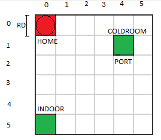

Introduction
Lo sprint0 ha prodotto la seguente architettura:

Requirements
I requisiti sono scritti dal committente TemaFinale23.
Goal di questo sprint:
Goal di questo sprint:
- sviluppo del core business del sistema: coldstorageservice, transporttrolley, coldroom
- testing dei componenti sviluppati
Requirement analysis
KEY POINT: Dai requisiti possiamo evincere che:
- Le richieste di emissione ticket devono poter essere elaborate in parallelo alle azioni di carico e scarico del TransportTrolley
-
Service area è l'area di lavoro del sistema e si assume sia rettangolare e in piano.
L'area viene modellata come suddivisa in una griglia di celle quadrate di dimensione costante pari a RD, pari alla dimensione del DDR robot.

È composta da:- INDOOR: rappresenta il punto di arrivo dei Fridge truck per la consegna del carico di peso FW.
- ColdRoom: container dove viene deposistato il carico dal trasport trolley ed ha una capacità massima pari a MAXW.
- Home: indica la posizione di partenza del trasport trolley e il punto di attesa dello stesso in caso non ci siano richieste da elaborare.
-
Transport trolley è l'attore che si occupa di impartire comandi al basicrobot.
L'implementazione di quest'ultimo è fornita dal committente e modella il concetto di DDR robot.
Le interazioni utili per la comunicazione tra transport trolley e basicrobot sono:
Request moverobot : moverobot(TARGETX, TARGETY)
Request doplan : doplan(PATH, OWNER, STEPTIME)
- Fridge truck sono soggetti esterni all'applicazione in grado di interagire con la ServiceAccessGUI.
- ServiceAccessGUI è rappresentata nell'architettura come un attore che si interpone tra l'utente (fridge truck) e il ColdStorageService.
- ServiceStatusGUI è anch'essa modellata come attore ed ha la responsabilità di mostrare un riepilogo dello stato del sistema al Service-manager.
- Sonar e Led sono componenti realizzati come attori appartenenti ad un diverso contesto (RaspberryPi).
Dialogo col committente
- Il processo di scarico della ColdRoom sarebbe da realizzare mediante un attore apposito. Tale realizzazione non è d'interesse in questo processo ma può essere implementato in uno sviluppo futuro.
Analisi del Problema
Fare giovedi 17: sistemare analisi del problema -> coldroom, ticket, aggiungere del fridge truck per simulare utente
coldroom come pojo, peso virtuale e peso reale FATTO
gestione svuotamento coldroom (attore dedicato) DA FARE
driver distratto, carico minore o uguale a quello dichiarato DA FARE
driver malevolo, come riconoscere il truck DA FARE
struttura ticket FATTO
ticketservice FATTO
Problema load-time lungo, quando il fridge truck invia il ticket come messaggio di showticket non riceve alcuna risposta fino a quando il robot completa l'operazione di carico.
In questo modo il truck è in grado di capire se il suo ticket è valido solamente quando riceve un messaggio di chargeTaken, quindi nel caso in cui il suo ticket
sia stato rifiutato non riceverebbe nessun messaggio e continuerebbe a rimanere in attesa. Quindi per affrontare questo problema è stato pensato di impostare
un'interazione a DUE-FASI tra driver e ColdStorageService:
ColdRoom, è stato deciso di rappresentarla mediante due variabili,
Struttura Ticket:
TicketService, viene modellato come attore per permettere all'applicazione di essere in grado di rispondere sempre alle richieste di nuovi ticket, per quindi consentire un'elaborazione in parallelo delle operazioni di emissione ticket e azioni di carico e scarico del TransportTrolley. Per fare ciò si è scelto di delegare a tale attore i messaggi newticket in ingresso. Inoltre si occupa di verificare la validità di un ticket presentato da un fridge truck, e verifica che il CurrentWeightVirtual non ecceda il limite imposto dalla capacità della ColdRoom.
Svuotamento ColdRoom, per gestire lo svuotamento della ColdRoom abbiamo modellato un attore apposito (EmpytColdRoom) che ad intervalli di tempo regolari invia un richiesta al coldstorageservice. Abbiamo deciso di modellarlo come attore per rappresentare un operatore che si occupa dello svuotamento. Driver distratto Questo problema ha indotto il committente ad affermare che: quando un agente esterno (driver) invia il ticket per indurre il servizio a scaricare il truck, si SUPPPONE GARANTITO che il carico del truck sia UGUALE (o al più MINORE) del carico indicato nella prenotazione. Al momento della presentazione del ticket viene fornito dal truck driver il peso effettivo della consegna. Questo valore viene confrontato con il peso dichiarato nella fase di richiesta del ticket. Se tale valore è inferiore al peso dichiarato, il CurrentWeightVirtual viene decrementato della differenza dei due valori. Problema del driver malevolo Questo problema ha indotto il committente ad affermare che si fa l’ipotesi che nessun driver cerchi di imbrogliare (rubando ticket, etc.)
- FASE 1: il driver invia il ticket e attenda una risposta (immediata) come ad esempio ticketaccepted/ticketrejected
- FASE 2: il driver invia la richiesta loaddone e attenda la risposta (chargeTaken o fallimento per cause legate al servizio)
ColdRoom, è stato deciso di rappresentarla mediante due variabili,
CurrentWeightReale
CurrentWeightVirtual.
CurrentWeightRealrappresenta il peso effettivo contenuto all'interno della ColdRoom.
CurrentWeightVirtualrappresenta il peso effettivo contenuto all'interno della ColdRoom sommato al peso totale dato dai ticket emessi ma non ancora elaborati.
CurrentWeightRealviene gestito dalla ColdStorageService mentre
CurrentWeightVirtualviene gestito dal TicketService.
Struttura Ticket:
TicketService, viene modellato come attore per permettere all'applicazione di essere in grado di rispondere sempre alle richieste di nuovi ticket, per quindi consentire un'elaborazione in parallelo delle operazioni di emissione ticket e azioni di carico e scarico del TransportTrolley. Per fare ciò si è scelto di delegare a tale attore i messaggi newticket in ingresso. Inoltre si occupa di verificare la validità di un ticket presentato da un fridge truck, e verifica che il CurrentWeightVirtual non ecceda il limite imposto dalla capacità della ColdRoom.
Svuotamento ColdRoom, per gestire lo svuotamento della ColdRoom abbiamo modellato un attore apposito (EmpytColdRoom) che ad intervalli di tempo regolari invia un richiesta al coldstorageservice. Abbiamo deciso di modellarlo come attore per rappresentare un operatore che si occupa dello svuotamento. Driver distratto Questo problema ha indotto il committente ad affermare che: quando un agente esterno (driver) invia il ticket per indurre il servizio a scaricare il truck, si SUPPPONE GARANTITO che il carico del truck sia UGUALE (o al più MINORE) del carico indicato nella prenotazione. Al momento della presentazione del ticket viene fornito dal truck driver il peso effettivo della consegna. Questo valore viene confrontato con il peso dichiarato nella fase di richiesta del ticket. Se tale valore è inferiore al peso dichiarato, il CurrentWeightVirtual viene decrementato della differenza dei due valori. Problema del driver malevolo Questo problema ha indotto il committente ad affermare che si fa l’ipotesi che nessun driver cerchi di imbrogliare (rubando ticket, etc.)
Architettura logica
Dall'architettua logica possiamo evidenziare i seguenti componenti:
- ColdStorageService: riceve dal fridge truck le richieste di verifica di validità dei ticket che vengono successivamente inoltrate al TicketService, riceve le richieste di svuotamento dall'EmpytColdRoom e invia i messaggi al TrasportTrolley per iniziare la deposit action
- TransportTrolley: invia al BasicRobot i messaggi necessari per eseguire la deposit action
- TicketService: si occupa di gestire le richieste per l'emissione di nuovi ticket e di verificarne la validità nel momento in cui viene presentato dal fridge truck
- EmpytColdRoom: si occupa di svuotare periodicamento la coldroom inviato un apposito messaggio al ColdStorageService
- FridgeTruck: invia le richieste per l'emissione di un nuovo ticket
- BasicRobot: esegue i comandi ricevuti dal TransportTrolley
Progettazione
Struttura ticket, abbiamo deciso di modellare l'entità ticket nel seguente modo:
I parametri per la creazione di un Ticket sono i seguenti:
Problema load-time lungo: Tale problema, descritto in precedenza, viene risolto con le due seguenti request-response:
Implementazione FridgeTruck: Questo attore simula l'utente finale. Tale attore, come l'utente finale, interagisce con il sistema inviando i seguenti messaggi:
data class Ticket(val id: String, val creationTime: Long, val fw: Int) {
companion object{
@JvmStatic
fun getRandomId() : String {
val length = 5
val allowedChars = ('A'..'Z') + ('a'..'z')
return (1..length)
.map { allowedChars.random() }
.joinToString("")
}
}
}
I parametri per la creazione di un Ticket sono i seguenti:
- Id: consiste in una stringa, contenente caratteri alfabetici, generata casualmente che permette di identificare univocamente il ticket.
- creationTime: equivale all'istante di tempo in cui viene creato il ticket. Questo campo verrà utilizzato per verificarne la validità
- fw: riguarda l'informazione relativa al peso del carico, in modo da poter gestire il problema del driver distratto che verrà affrontato in seguito.
Problema load-time lungo: Tale problema, descritto in precedenza, viene risolto con le due seguenti request-response:
Request ticketrequest : ticketrequest( TICKET, FW )
Reply ticketaccepted : ticketaccepted( MESSAGE )
Reply ticketrejected : ticketrejected( REASON )
Request loaddone : loaddone(FW)
Reply chargetaken : chargetaken(MESSAGE)
Reply chargefailure : chargefailure(REASON)
- ticketrequest è la richiesta con cui si presenta il ticket per poter successivamente eseguire l'operazione di scarico. Ticket rappresenta l'id fornito in precedenza in risposta alla richiesta di newticket (tale messaggio verrà descritto più avanti nel documento); FW rappresenta il peso effettivo consegnato dal fridge truck.
- loaddone viene invato, dal fridge truck, appena si riceve la risposta ticketaccepted. Con questa richiesta l'utente si mette in attesa della terminazione dell'operazione di carico del transporttrolley, che viene segnalata dalla ricezione del messaggio chargetaken.
Request newticket : newticket( FW )
Request ticketrequest : ticketrequest( TICKET, FW )
Dispatch updatevirtualweight : updatevirtualweight(FW)
- newticket è la richiesta con cui si richiede la creazione di un nuovo ticket. FW rappresenta la quantità di peso per cui si richiede il ticket.
- updatevirtualweight viene ricevuto quando si esegue un'operazione di svuotamento della ColdRoom. Esso è necessario per aggiornare il peso virtuale sottraendo il peso svuotato. FW rappresenta il peso svuotato dalla ColdRoom.
Request clearColdRoom : clearColdRoom(_)
Tale messaggio (senza parametri) viene inviato alla ColdStorageService.
Implementazione FridgeTruck: Questo attore simula l'utente finale. Tale attore, come l'utente finale, interagisce con il sistema inviando i seguenti messaggi:
Request newticket : newticket( FW )
Request ticketrequest : ticketrequest( TICKET, FW )
Request loaddone : loaddone(FW)
Implementazione ColdRoom:
è stato deciso di rappresentarla mediante due variabili:
var CurrentWeightReal;
var CurrentWeightVirtual;
- CurrentWeightReal rappresenta il peso effettivo contenuto all'interno della ColdRoom, e viene gestito dalla ColdStorageService
- CurrentWeightVirtual rappresenta il peso effettivo contenuto all'interno della ColdRoom sommato al peso totale dato dai ticket emessi ma non ancora elaborati, e viene gestito dal TicketService.
Request ticketrequest : ticketrequest( TICKET, FW )
Request clearColdRoom : clearColdRoom(_)
Dispatch goMoveToIndoor : goMoveToIndoor(_)
Dispatch goMoveToHome : goMoveToHome(_)
Dispatch deposit : deposit(_)
- goMoveToIndoor viene inviato al transporttrolley per iniziare la deposit action
- goMoveToHome viene inviato al transporttrolley quando non ci sono richieste di carico in attesa
- deposit viene invato dal transporttrolley per indicare che è terminata correttamente l'operazione di deposito e l'attore aggiorna il valore del CurrentWeightReal.
if(foodWeight < ticket!!.fw) {
currentWeightVirtual -= (ticket!!.fw-foodWeight)
}
- foodWeight è il peso effettivo dall'utente
- ticket!!.fw è il peso dichiarato dall'utente nella fase di emissione del ticket
Test
Piano di lavoro
| Sprint | Goal | Tempo stimato | Note |
|---|---|---|---|
| Sprint 1 | realizzazione dei prototipi dei componenti ColdRoom e ColdStorageService | 3 giorni | |
| testing | 4 ore | il testing non prevederà l'interazione diretta con il basicrobot in quanto il TransportTrolley non sarà ancora interamente realizzato | |
| Sprint 2 | realizzazione del TrasportTrolley | 2 giorni | |
| testing | 3 ore | il testing verrà effettuato utilzanndo il simulatore fridge truck in quanto le GUI non saranno ancora sviluppate | |
| Sprint 3 | realizzazione delle GUI | 1 giorno | lo sviluppo delle due GUI può essere eseguito in parallelo in quanto non sono interagenti tra loro |
| testing | 2 ore | ||
| Sprint 4 | realizzazione degli Alarm Requirements (componenti Sonar e Led) | 1 giorno | |
| testing | 1 ora | il testing verterà su tutti i componenti del sistema |